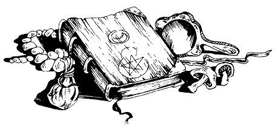

Vous saisissez un lourd volume au dos duquel est gravé un œil immense. Il ne porte aucun titre. Vous ouvrez le livre, et vous découvrez un frontispice représentant les détails minutieux d'un œil symbolique ; vous êtes totalement fasciné par cette illustration. Comme vous la regardez avec plus d'attention encore, il vous semble que sa pupille sombre brille, comme si elle était faite de verre. Puis, des formes apparaissent, et il vous semble entendre de faibles sons. Les sons que vous entendez se précisent : ce sont des cris d'agonie ! Quant aux formes... vous distinguez nettement des visages qui se tordent de douleur. Le sort des pauvres infortunés que vous devinez perdus dans l'œil vous fait frissonner de terreur, et vous ajoutez 2 points à votre total de PEUR. Si vous êtes encore en vie, vous réalisez ce qui vous arrive, et vous essayer de refermer le livre. Mais quelque chose vous oblige à continuer de regarder le frontispice. Jetez deux dés. Si le nombre que vous obtenez est supérieur à votre total d'HABILETÉ . Sinon .
